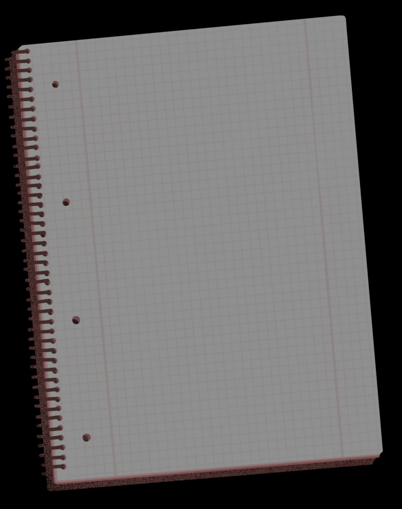
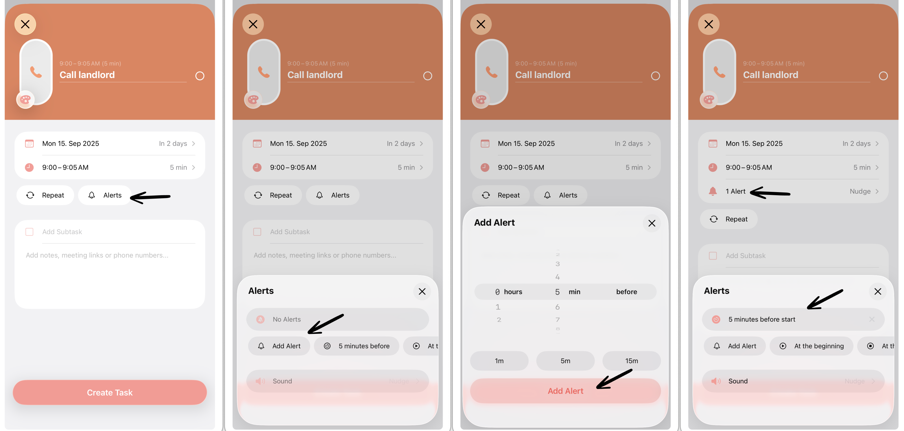

从收件箱到周报：Structured 串起我的每周计划全流程
以前每周一早上要在日历、笔记、邮箱三处来回切，现在收件箱一键收、时间线直接排、提醒自动到点响，多设备同步连导出周报都省事了。
旧流程：一个周一早上要切五个应用
我是做技术支持的，每周一早上有一个固定仪式——把上周积压的需求和本周要推进的事全部捋一遍，然后排进日程、设好提醒、最后产出一份周报到飞书群里。
这个流程以前是什么样的？先翻邮箱看客户那边的新需求，打开企业微信看部门群里的待办@，再点进 Notion 找自己上周没做完的事。然后呢，把这一长串事手动复制到 Google Calendar——但日历里写不下细节，就只能记个标题，详细描述又回到 Notion 写一份。接着要在日历里一条条设提醒，因为不同任务有不同的提前量：客户电话要提前 10 分钟，内部会议提前 5 分钟就行。最后我还要把 Calendar 的日程和 Notion 的周计划文档对一遍，确保没有漏项。
这个流程的问题不在任何一步本身，而在它把同一件事拆成了三份：Calendar 里有时间槽，Notion 里有详细描述，脑子里还得记着哪些事对应哪个时间段。每天早上打开手机，Calendar 推送一条、Notion 推送一条，两边的提醒错开还会造成"这个会我到底排了没"的二次确认。
更烦的是导出周报。以前要从 Calendar 截一张日程图，再从 Notion 复制一份文字列表，粘到飞书文档里拼起来，格式还对不齐。
新流程：Structured 作为中枢
现在这个流程被我砍成了两步，Structured官网 上介绍的这款时间线规划软件，直接放在最中间当枢纽。具体怎么接：
第一步：收——所有需求先进 Structured 收件箱。
不管是邮件里的客户诉求、企业微信的@、还是 Notion 里的遗留事项，我不再分别存到三个应用，而是统一用手机的分享菜单直接发进 Structured 收件箱。邮件正文复制粘一个标题进去，微信里的长按"转发到"选 Structured，Notion 里的勾选框拖成一条任务。收件箱就是我的"待分拣池"，随时往里扔，不分类，不排序。
第二步：排——周一早上一次排干净。
周一坐在电脑前，打开 Structured 的时间线视图，把收件箱里的事一条条拖进时间槽。它的时间线是横向展开的——左边是今天早上，右边是周五下午，中间每一个时间块都能直接放任务。拖的时候可以顺手调时间、加备注、设提前提醒。全天的事比如出差、客户拜访日，就直接拖到时间线顶部的全天任务区域，不会挤占具体时间段。

排完之后，整周的事在一个画面里一目了然。Structured 会自动按任务里设的提醒推通知，手机、平板、电脑三端同步响。到周末要写周报的时候，时间线本身就是一份现成的周计划——截图发给飞书群就行，连格式都不用调。
上下游工具怎么配合
Structured 不是独立存在的，它需要和几个常用工具形成衔接。这里说两个实际的对接点：
邮件进收件箱的桥。 我用的是手机分享菜单直接发 Structured，但有时候电脑上收邮件更方便，就复制邮件主题加开头两三行，粘进 Structured 的快速输入框。不用结构化，只要一句话能让我之后认出来是什么事就行。收件箱里堆得多了会慌，但 Structured 本身在收件箱的交互上做得很克制——长按可以拖排序、点圆圈打勾完成，完成的任务不会消失而是变灰加删除线，想清干净的时候在设置里开关隐藏就好。
周报导出到飞书。 Structured 本身没有"导出文档"功能，但它的时间线视图本身就是可视化的周计划。我有两种方式：一是直接截时间线的图发飞书群（适合给非技术同事看，一眼就懂）；二是把时间线里的任务列表复制出来，粘进飞书文档当周计划的文字部分。第二种更适合给上级汇报，因为他要看到具体有哪些事、每件事排在哪天。
实操里最容易断链的两个环节
说了整个流程顺畅，但确实有两个点容易卡住，专门讲一下。
第一个是安卓端的闹钟权限。 我主力用安卓手机，最开始从官方下载装完就设了提醒但到点没响，排查了半天才发现是 Android 13 以上把普通通知和"闹钟和提醒"拆成了两层权限。我只开了前者，后者没开——后来去Structured文档翻了一下才弄明白，Structured 的任务提醒走的是后者那条通道。解决方式倒简单：进 Structured 设置里找到 Notifications & Alerts，点 Allow Alarms 那一项，它会直接跳转到系统的权限设置页，打开开关就行。iOS 用户不用管这回事，iPhone 上的 Structured 开通知就够了，系统层面不搞额外权限。

第二个是收件箱清不空的焦虑。 刚开始用的时候我每天睡前都想把收件箱清空，但实际上总会剩个三五条放了好几天没排的。后来才反应过来——这些事不是我忘了，而是它们真的不够重要。Structured 不替我做删改决定，但它让这个决策变得可视：当我看到同一件事在收件箱里放了超过三天还没拖进时间线，要么砍了它，要么老老实实给它排个时间段。现在我收件箱里留个两三条是常态，不再追求清空，也不会因此焦虑。
效果和边界
这套流程跑了大概两个月，我统计了一下实际省掉的操作：
- 以前周一早上要在五个应用间切换至少 15 次，现在只开 Structured 一个，加上收邮件发邮件各一次，总共不到 10 次
- 提醒不响的问题彻底解决了——安卓权限的那个坑踩过之后，现在所有提醒都能准点到
- 周报从以前的"先画图再排版再粘文字"变成"一张截图就发"，少了至少两次手动复制粘贴
但这套流程不是万能的。比如团队里其他人都在用 Notion 做协同，我一个人用 Structured 就很尴尬——我排的任务不能直接同步回团队的 Notion 数据库，还得手动拷一份过去。另外 Structured 也不支持多人协作，它是纯个人效率工具，不能当成团队的任务管理系统来用。
还有一点要说清楚：Structured 免费版够用，但 Pro 订阅的自定义提醒样式对我这种每天排十几条任务的人来说是有价值的——可以给客户相关的任务设一个特有的铃声，到点就能区分出是内部会议还是客户电话。如果你的任务量不大，免费版完全没问题。
上手建议
如果你也在考虑把自己的工作流往 Structured 里嵌，我建议别一上来就全量替换。先挑一个环节试——比如把"每周排周计划"这一步搬进去跑两周，看看自己的节奏能不能对上。如果觉得顺手，再把收件箱的渠道一条条接进来。现在它的中文文档写得挺细的，上面讲的安卓权限那个坑，文档里专门有一页解释，踩一次之后就不会再掉进去了。
至于从哪拿到它——多设备同步是它的核心优势之一，手机平板电脑三端数据自动同步是免费功能，不用 Pro 也能享受到。它的资料在GitHub、Gitee、GitCode 三个仓库都维护着，国内访问哪个方便就去哪个。